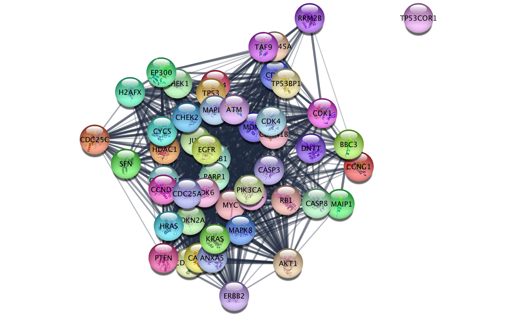

checkCytoscapeVersion
Checks cytoscape version.
hostcytoscape host address, default=cytoscape_hostportcytoscape port, defaul=cytoscape_portreturnsnothing
>>> import AGEpy as age
>>> age.checkCytoscapeVersion()
cytoscapeVersion 3.6.0
apiVersion v1
cytoscape
General function for interacting with Cytoscape API.
namespacenamespace where the request should be executed. eg. "string"commnandcommand to execute. eg. "protein query"PARAMsa dictionary with the parameters. Check your swagger normaly running on 'http://localhost:1234/v1/swaggerUI/swagger-ui/index.html?url=http://localhost:1234/v1/commands/swagger.json'hostcytoscape host address, default=cytoscape_hostportcytoscape port, default=cytoscape_portmethodtype of http call, ie. "POST" or "GET" or "HELP".verboseprint more informationreturnsFor "POST" the data in the content's response. For "GET" None.
>>> import AGEpy as age
>>> response=age.cytoscape("string","pubmed query",{"pubmed":"p53 p21","limit":"50"})
>>> print response
{u'SUID': 37560}
result
Displays the current network.
filetypefile type, default="PNG"saveas/path/to/non/tmp/file.prefixhostcytoscape host address, default=cytoscape_hostportcytoscape port, default=cytoscape_portreturnsan image
>>> import AGEpy as age
>>> response=age.result()
>>> response

getTableColumns
Gets tables from cytoscape.
tabletable to retrieve eg. nodecolumnscolumns to retrieve in list formatnamespacenamepsace, default="default"networka network name or id, default="current"hostcytoscape host address, default=cytoscape_hostportcytoscape port, default=cytoscape_portverboseprint more informationreturnsa pandas dataframe
>>> import AGEpy as age
>>> response=age.getTableColumns('node',['display name'])
>>> print response
display name
9606.ENSP00000367207 MYC
9606.ENSP00000356150 MDM4
9606.ENSP00000228872 CDKN1B
9606.ENSP00000361021 PTEN
9606.ENSP00000265734 CDK6